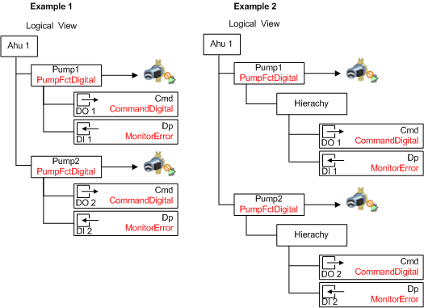
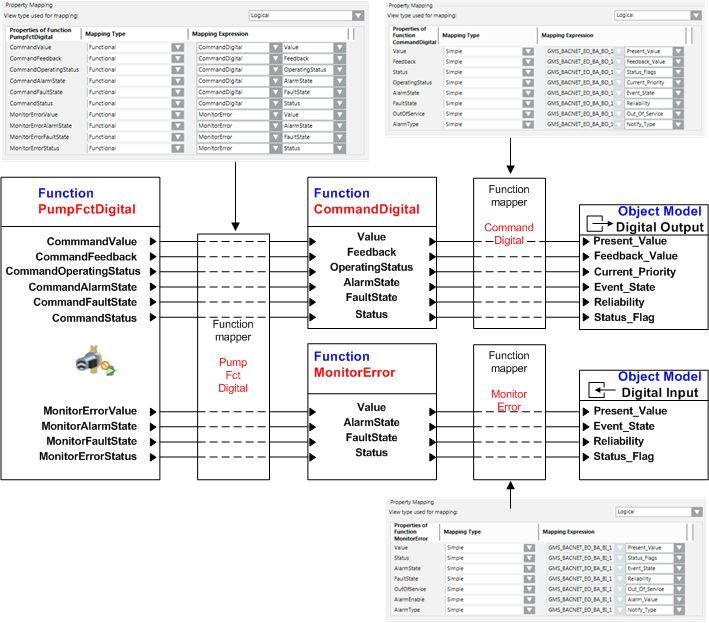

Functional Mapping
As part of Functional Mapping, which is independent of the subsystem, several Functions are required for object display and operation. This requires that the logical mapping in the system be hierarchical. For example, a pump with digital I/O.

Example 1 shows Pump1 and Pump2 with the PumpFctDigital Function as well as two subordinate Functions, CommandDigital and MonitorError. During graphic engineering, drag-and-drop takes place on the object hierarchy of Pump1 and Pump2. During operation in the Operation tab, the properties of the CommandDigital and MonitorError Functions are displayed together for the selected pump (if configured accordingly).
Example 2 represents an additional hierarchy between the PumpFctDigital and the CommandDigital and MonitorError Functions The functionality for engineering, display, and operation is the same as in example 1.
When creating a Functional Function with several data points, several workflows must be carried out to inherit the data.
- Create a CommandDigital and a MonitorError Function.
- In the Function Mapper of the Digital Output Object Model, assign the CommandDigital Function.
- In the Function Mapper of the Digital Input Object Model, assign the MonitorError Function.
- Create a PumpFctDigital Function.
- In the Function Mapper of the PumpFctDigital Function, assign the properties of the CommandDigital and MonitorError Functions.

Assigning a Function to an Object (Instance)
With known subsystems, Function is assigned directly to individual objects during SiB-X data import. With third-party integration, the Function information is not available and must retroactively be assigned manually to individual objects in the Object Configurator (Assigning a Function to an Object).